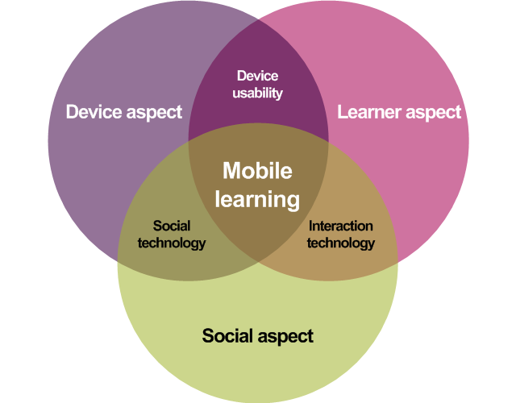

At the end of this lesson student should be able to;
Data management comprises all the disciplines related to managing data as a valuable resource.
The concept of "Data Management" arose in the 1980s as technology moved from sequential processing (first cards, then tape) to random access processing.
Since it was now technically possible to store a single fact in a single place and access that using random access disk, those suggesting that "Data Management" was more important than "Process Management" used arguments such as "a customer's home address is stored in 75 ( or more other large number) places in computer systems."
During this preiod, random access processing was not competitively fast, "Process Management" was more important than "Data Management" used batch processing times as their primary argument.
As applications moved more and more into real-time, interactive applications, it became obvious to most practitioners that both management processes were important. If the data was not well defined, the data would be mis-used in applications. If the process was'nt well defined, it was impossible to meet user needs.
In mordern management usage, one can easily discern a trend away from the term 'data' in composite expressions to the term information or even knowledge when walking in non-technical context.
